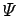
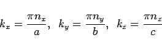

Inhalt Index DeskTop Bronstein

 Differentialgleichungen Partielle Differentialgleichungen Partielle Differentialgleichungen aus Naturwissenschaft und Technik Schrödinger-Gleichung
Differentialgleichungen Partielle Differentialgleichungen Partielle Differentialgleichungen aus Naturwissenschaft und Technik Schrödinger-Gleichung


Ein Teilchen mit der Masse m bewege sich kräftefrei in einem Quader mit undurchlässigen Wänden der Kantenlänge , so daß es sich in einem Potentialkasten befindet, der in alle drei Raumrichtungen wegen seiner Undurchlässigkeit unendlich hoch ist, d.h., die Aufenthaltswahrscheinlichkeit des Teilchens und damit die Wellenfunktion  verschwinden außerhalb des Kastens. Die SCHRÖDINGER-Gleichung und die Randbedingungen lauten für dieses Problem
| (9.113b) |
| (9.114a) |
zur Variablentrennung ergibt sich nach Einsetzen in (9.113a)
| (9.114b) |
Jedes der drei Glieder auf der linken Seite hängt nur von einer unabhängigen Variablen ab. Ihre Summe kann für beliebige  nur dann konstant gleich -B sein, wenn jedes einzelne Glied für sich konstant ist. In diesem Falle kann die partielle Differentialgleichung in drei gewöhnliche Differentialgleichungen aufgespalten werden:
nur dann konstant gleich -B sein, wenn jedes einzelne Glied für sich konstant ist. In diesem Falle kann die partielle Differentialgleichung in drei gewöhnliche Differentialgleichungen aufgespalten werden:
Zwischen den Separationskonstanten besteht der Zusammenhang
| (9.114d) |
womit folgt
| (9.114e) |
Lösungen der drei Gleichungen (9.114c) sind die Funktionen
| (9.115a) |
mit den Konstanten . Damit erfüllt die Randbedingungen  für
für  und
und  . Um die Bedingung
. Um die Bedingung  auch für
auch für  und z = c zu erfüllen, muß
und z = c zu erfüllen, muß
| (9.115b) |
gelten, d.h., es müssen die Beziehungen
|  | (9.115c) |
erfüllt sein, in denen  und nz ganze Zahlen sind.
und nz ganze Zahlen sind.
Für die Gesamtenergie erhält man damit
| (9.115d) |
woraus folgt, daß Energieänderungen des Teilchens durch Austausch mit der Umgebung nicht kontinuierlich, sondern lediglich in Quanten möglich sind. Die Zahlen  und , die zu den Eigenwerten der Energie gehören, werden Quantenzahlen genannt.
und , die zu den Eigenwerten der Energie gehören, werden Quantenzahlen genannt.
Nach der Berechnung des Konstantenprodukts AxAyAz aus der Normierungsbedingung
| (9.115e) |
ergeben sich die vollständigen Eigenfunktionen des durch die drei Quantenzahlen charakterisierten Zustandes zu
| (9.115f) |
Die Eigenfunktionen verschwinden an den Wänden, weil eine der drei Sinusfunktionen gleich Null ist. Außer an den Wänden ist das immer dann der Fall, wenn die Beziehungen
Im Spezialfalle des Würfels mit a = b = c kann sich ein Teilchen gleichzeitig in mehreren Zuständen befinden, die durch unterschiedliche linear unabhängige Eigenfunktionen beschrieben werden und die gleiche Energie besitzen. Das ist der Fall, wenn die Summe nx2 + ny2 + nz2 in verschiedenen Zuständen den gleichen Wert hat. Man spricht dann von entarteten Zuständen, und wenn es i Zustände mit gleicher Energie sind, von i-facher Entartung.
Die Quantenzahlen  und nz können alle ganzen Zahlen durchlaufen, außer der Null. Letzteres würde bedeuten, daß die Wellenfunktion identisch Null ist, d.h., das Teilchen an keinem Ort innerhalb des Kastens existiert. Somit muß die Teilchenenergie endlich bleiben, selbst wenn die Temperatur des absoluten Nullpunktes erreicht ist. Diese Nullpunktstranslationsenergie beträgt für den Quader
und nz können alle ganzen Zahlen durchlaufen, außer der Null. Letzteres würde bedeuten, daß die Wellenfunktion identisch Null ist, d.h., das Teilchen an keinem Ort innerhalb des Kastens existiert. Somit muß die Teilchenenergie endlich bleiben, selbst wenn die Temperatur des absoluten Nullpunktes erreicht ist. Diese Nullpunktstranslationsenergie beträgt für den Quader
| (9.115h) |